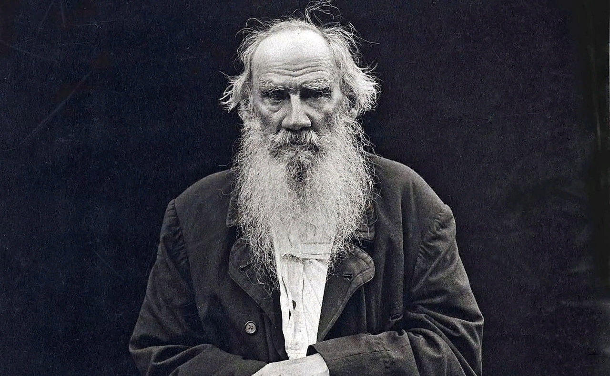

Стремитесь не к успеху, а к ценностям, которые он дает.
Настоящий мужчина, как ковёр тёти Зины
— с каждым годом лысеет.
— с каждым годом лысеет.
Вы никогда не пересечете океан, если не наберетесь
мужества потерять берег из виду.
мужества потерять берег из виду.
Если тебе где-то не рады в рваных носках, то и в целых туда идти не стоит.
Свобода ничего не стоит, если она не включает в себя свободу ошибаться.
Если вы думаете, что на что-то способны, вы правы; если думаете, что у вас ничего не получится - вы тоже правы.
Зачастую говорят, что мотивации хватает ненадолго.
Но то же самое происходит и с освежающим душем, поэтому и рекомендуют его принимать ежедневно.

Все дело в мыслях. Мысль — начало всего. И мыслями можно управлять.
И поэтому главное дело совершенствования: работать над мыслями.
И поэтому главное дело совершенствования: работать над мыслями.
Человек, которым вам суждено стать – это только тот человек, которым вы сами решите стать.
Не стоит винить ребенка за то, что он боится темноты. Настоящая трагедия – это когда взрослый человек боится света.
Начните оттуда, где вы сейчас находитесь. Используйте то, что у вас есть и делайте все, что можете.